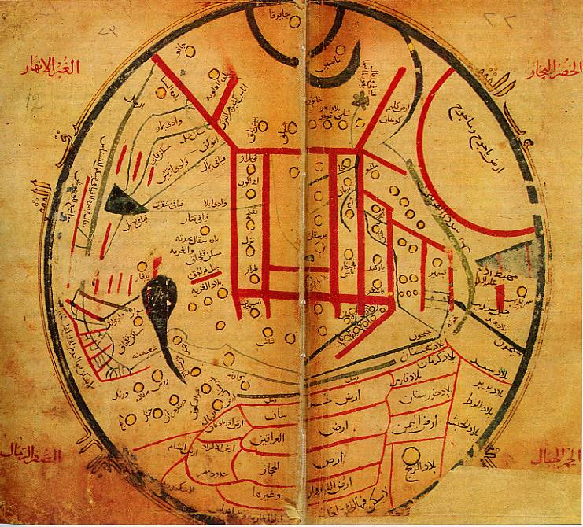

Maltepe Fen Lisesi · TEKNOFEST
Dîvânu Lugâti't-Türk Haritası
11. yüzyıl dünya haritasını kaynakları ve belirsizlik düzeyleriyle okumak için etkileşimli ortam.
Maltepe Fen Lisesi · TEKNOFEST
11. yüzyıl dünya haritasını kaynakları ve belirsizlik düzeyleriyle okumak için etkileşimli ortam.
